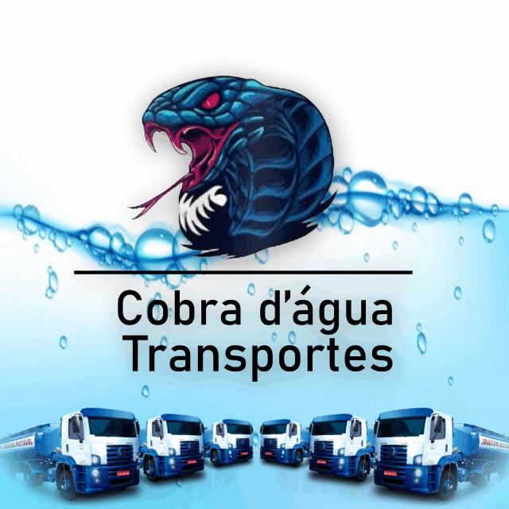

A empresa Cobra D'Água foi fundada em 2020 e atua no ramo de distribuição de água potável. Desde então, temos nos dedicado a fornecer água de qualidade para atender às necessidades dos nossos clientes. Nossa empresa se destaca pela sua abordagem profissional e compromisso com a excelência em todos os aspectos do nosso negócio. Com uma equipe qualificada e experiente, garantimos que a água fornecida esteja de acordo com os padrões de segurança e qualidade estabelecidos. Entendemos a importância da água potável para a saúde e o bem-estar das pessoas, bem como para as operações de diversas indústrias. Por isso, nos empenhamos em oferecer um serviço confiável e eficiente, garantindo que nossos clientes recebam água limpa e segura em tempo hábil. Além disso, nos preocupamos com a sustentabilidade e o meio ambiente. Investimos em práticas e tecnologias que minimizam o impacto ambiental da nossa atividade, como a gestão responsável de resíduos e a busca constante por processos mais eficientes.